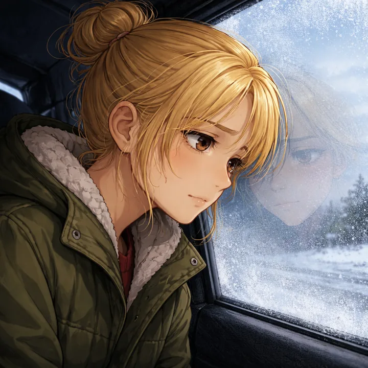
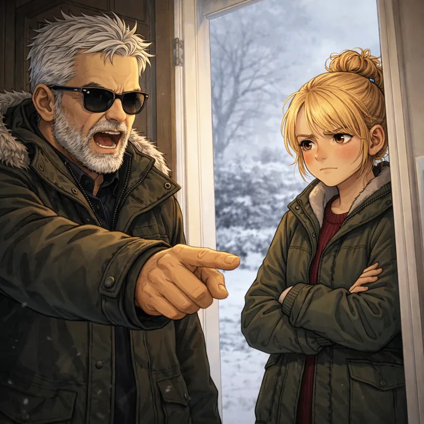
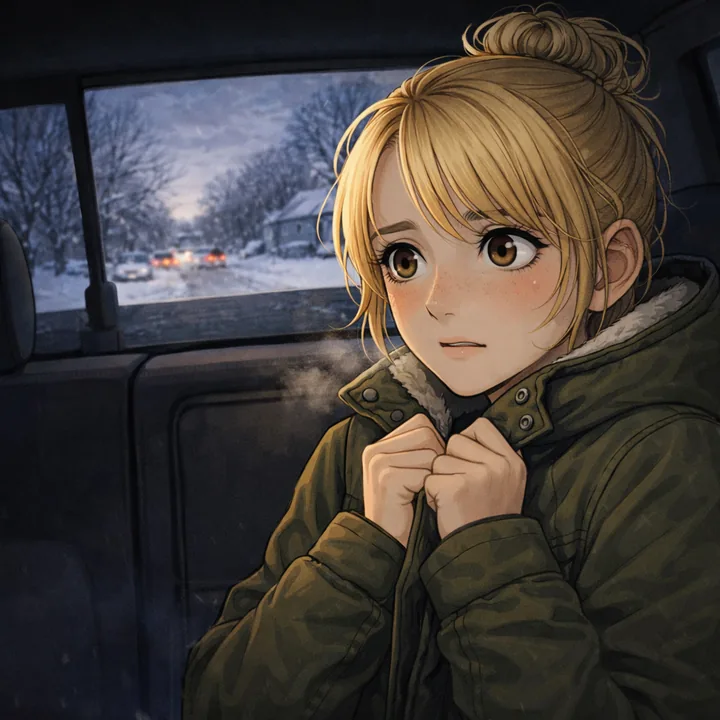
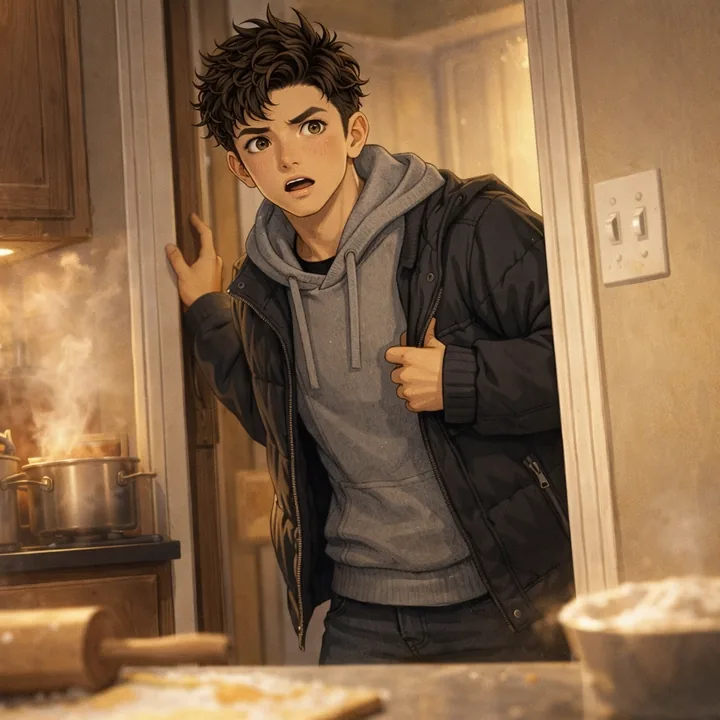
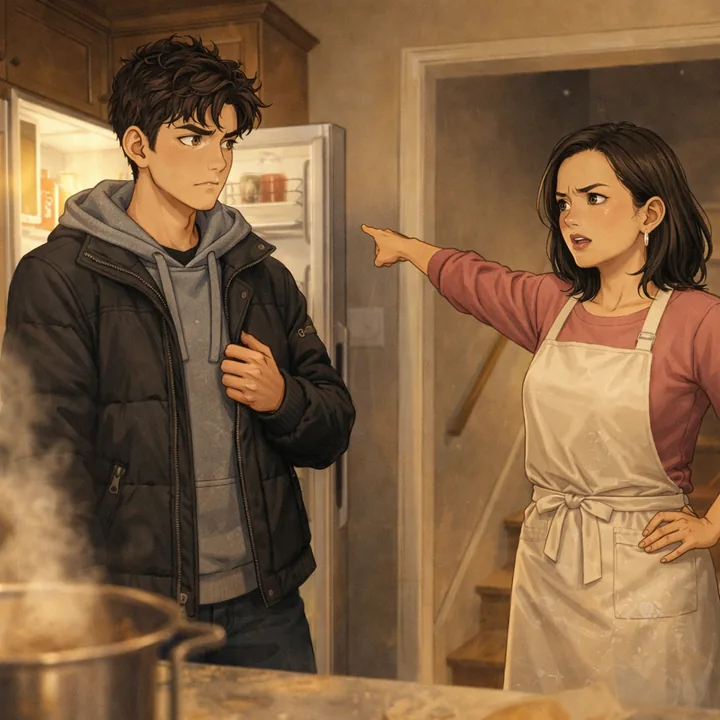
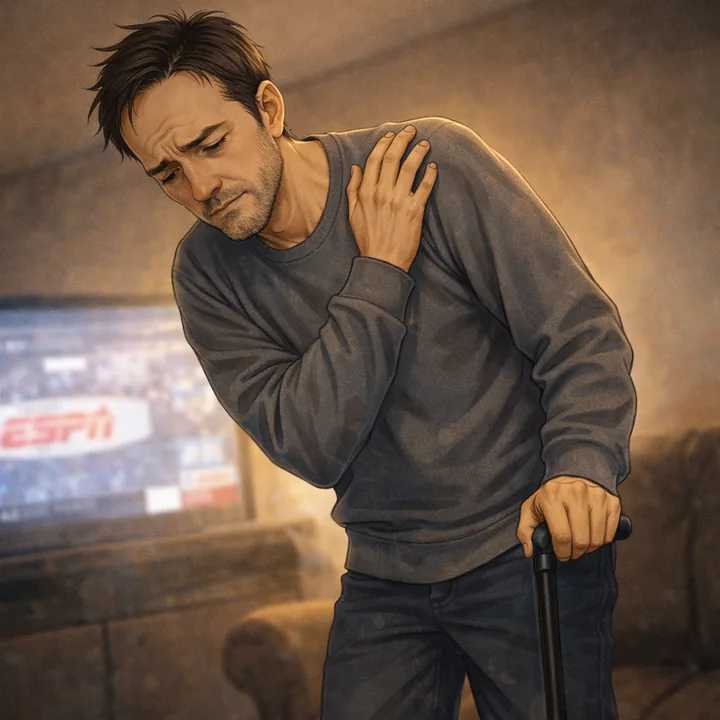

Fake Skating
CLICK A CHAPTER NUMBER TO START READING
Fake Skating follows Dani as she returns to small-town Minnesota hoping to reconnect with her old best friend Alec—only to find he’s become a hockey-obsessed hometown star—and when a sudden twist pushes them into a pretend relationship, the lines between performance and real feelings start to blur in ways neither of them expected.
ALEC
Alec hears the news at dinner: Dani Collins—his once-best-friend, once-something-more—is moving to Southview after her parents’ divorce. He plays along for his family, but the second he can escape, he bolts with rage and disbelief buzzing under his skin.

He tears out in his battered car, blasting a Brazilian track he doesn’t even understand, using volume to keep his head from exploding. Without meaning to, he ends up on the snowy dirt road by the pond—pulled back toward the one place he hasn’t let himself think about in years.
Alec parks and walks through deep snow to the abandoned pond shed—“their spot”—half expecting it to be ruined. Inside, his phone flashlight reveals the stolen chairs and the broken roof skylight still open to the moon, and the memories hit like a punch.
The shed drags him back to the last summer they were together: Dani and her mom only came for one month each year, and that month was everything—bikes, fishing, wandering town, and endless talking like no one else existed. This time, though, they came for a funeral, and the entire trip collapsed in two days.
After the funeral, Dani’s grandpa Mick explodes at her strict military dad in front of everyone, blaming him for tearing the family apart and basically throwing them out. By that night, Dani knows she’s leaving in the morning, and all their traditions—like the bakery donut game—vanish with it.
Later in the shed, Dani admits she’s weirdly devastated about losing her month in Southview, and Alec tries to bully the sadness away with jokes because he can’t handle her crying. Under the teasing, the truth slips out: he’s not ready to lose her, and he’s more upset than he wants to admit.
Later in the shed, Dani admits she’s weirdly devastated about losing her month in Southview, and Alec tries to bully the sadness away with jokes because he can’t handle her crying. Under the teasing, the truth slips out: he’s not ready to lose her, and he’s more upset than he wants to admit.
Alec leans into the memory like it’s happening again, the shed’s familiar smell and their old closeness pulling him forward—until the rest of what happened after that night slams down like a door. Back in the present, he drives home burning with anger, realizing he still hates her for what she did afterward… and now she’s coming back into his life.
February—Senior YearDANI
Dani wakes up in the moving truck to a wall of snow and the crushing realization that Southview is real. Her mom tries to sell the move, but Dani’s stomach knots at the thought of facing Alec again after their long-distance connection mysteriously died.
They jump down into brutal wind and approach the big white house—Grandpa Mick’s—only to find it dark and empty. Dani watches her mom call him, and the “welcome” is a casual blow: he’s off helping a friend with a boat, leaving them to unload everything alone.
Inside, the downstairs feels like a frozen time capsule—except the cozy cookie smell is gone. Upstairs, French doors open to a completely rebuilt apartment: bright windows, modern wood floors, white shelves and fireplace, new bedrooms, a kitchenette, and even a private deck entrance.
They haul boxes for hours, and Dani’s surprise “welcome committee” appears: Benji—now insisting on “Ben”—the rich neighbor kid Alec used to roast. He’s suddenly helpful, annoyingly polished, and arrives in a luxury SUV, sliding his number into Dani’s phone like this is all very charming.
A horn blasts outside, and Grandpa Mick storms in with the energy of someone ready to fight a driveway war. He hugs Dani’s mom warmly, but when he finally looks at Dani, the big reunion crashes into the dumbest line imaginable: “You got tall.” Dani bails to the cold just to escape the humiliation.
By the time the truck is finally empty, Dani is wiped out and starving, ready to disappear into her new bedroom. Instead, her mom announces dinner plans—at the Barczewskis’—and Dani’s dread spikes so fast it’s almost physical.
Dani scrambles for excuses—she’s gross, she’s tired, she’s not “people-ready”—but her mom steamrolls her, and even Grandpa Mick briefly offers to stay behind with her before getting shut down. Seconds later, Dani’s in the back of Mick’s truck, trying to breathe through the panic of seeing Alec any minute now.
ALEC
Alec comes home from a quiet shift at his uncle’s hardware store, starving and aching, dreaming about food and a shower. His mom is in full dinner mode and casually drops the bomb: Dani, her mom Hannah, and Grandpa Mick are coming over tonight.
He tries to play it cool, but inside he’s spiraling—Dani in his house, with his family acting like she’s a beloved relative, feels like too much. The news also attracts his dad’s hockey-buddy fan club, who start circling the dinner like it’s a celebrity sighting because Mick Boche is a local legend.
Downstairs, the twins are hypnotized by a cartoon, and Alec’s dad moves stiffly with his cane while the guys watch sports and toss Alec compliments about his last game. Alec lies about how bad his shoulder is and forces himself to act normal as the countdown to “the Boches” begins.
Up in the bathroom, Alec tries to reset—until his music betrays him with a song that drags his thoughts straight back to Dani. He snaps it off, but the pain spikes when he lifts his shirt, a sharp reminder that his body is starting to fail him in stupid, everyday ways.
A text from Vinny invites him to a bonfire where “everyone” will be, and Alec’s immediate rule—avoid parties, stay clean—wavers. Under the hot spray, with his shoulder throbbing and Dani about to walk through his door, the idea of getting numb starts sounding dangerously appealing.